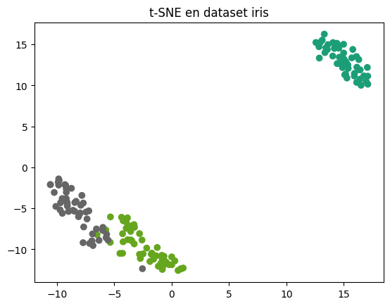

Manifold#
Ofrece técnicas de aprendizaje de variedades, como t-SNE e Isomap, para visualización y reducción de dimensionalidad no lineal. Para importar este módulo o una clase o función específica usar:
# Importar módulo
from sklearn import manifold
# Importar clase específica
from sklearn.manifold import ClassName
# Importar función específica
from sklearn.manifold import func_name
ClassName o func_name es el nombre de la clase o función respectivamente.
Note
Para más información de esta librería visitar la documentación de sklearn.
Clases#
Clases implementadas en el módulo manifold.
Clase |
Descripción |
|---|---|
Isomap(…) |
Incrustación de isomapas. |
Incrustación lineal local. |
|
MDS(n_components=2, …) |
Escala multidimensional. |
SpectralEmbedding(n_components=2, …) |
Incrustación espectral para la reducción no lineal de la dimensionalidad. |
TSNE(n_components=2, …) |
Incrustación estocástica de vecinos distribuida en T. |
Isopmap#
Isomap: Técnica de reducción de dimensionalidad no lineal que preserva las distancias geodésicas (basadas en la estructura de los datos) en lugar de las distancias euclidianas. Es útil para visualización de datos no lineales, como imágenes o señales, y reducción de dimensionalidad para modelos de machine learning.
# Sintaxis de llamada
Isomap(*, n_neighbors=5, radius=None, n_components=2, eigen_solver='auto', tol=0,
max_iter=None, path_method='auto', neighbors_algorithm='auto', n_jobs=None,
metric='minkowski', p=2, metric_params=None)
Parámetros:
n_neighbors -
int: Número de vecinos a considerar para cada punto.n_components -
int: Número de coordenadas para el manifold.
Atributos#
Atributos de la clase Isopmap.
Atributo |
Descripción |
|---|---|
dist_matrix_ |
Almacena la matriz de distancia geodésica de los datos de entrenamiento. |
embedding_ |
Almacena los vectores de incrustación. |
feature_names_in_ |
Nombres de las features observadas durante el ajuste. Definido sólo cuando X tiene nombres que son todos cadenas. |
kernel_pca_ |
Objeto |
n_features_in_ |
Número de features vistao durante el ajuste. |
nbrs_ |
Almacena la instancia vecina más cercana, incluyendo |
Métodos#
Métodos de la clase Isopmap.
Método |
Descripción |
|---|---|
fit(X, y=None) |
Calcula los vectores de incrustación de los datos X. |
fit_transform(X, y=None) |
Ajusta el modelo a partir de los datos en X y transforma X. |
Calcula el error de reconstrucción de la incrustación. |
|
transform(X) |
Transforma X. |
LocallyLinearEmbedding#
LocallyLinearEmbedding: Técnica de reducción de dimensionalidad no lineal que preserva las relaciones locales entre puntos de datos, reconstruyendo cada punto como una combinación lineal de sus vecinos.
# Sintaxis de llamada
Isomap(*, n_neighbors=5, n_components=2, reg=0.001, eigen_solver='auto', tol=1e-06,
max_iter=100, method='standard', hessian_tol=0.0001, modified_tol=1e-12,
neighbors_algorithm='auto', random_state=None, n_jobs=None)
Parámetros:
n_neighbors -
int: Número de vecinos a considerar para cada punto.n_components -
int: Número de coordenadas para el manifold.eigen_solver - {‘auto’, ‘arpack’, ‘dense’}: Método para calcular los eigenvalores.
Atributos#
Atributos de la clase LocallyLinearEmbedding.
Atributo |
Descripción |
|---|---|
embedding_ |
Almacena los vectores de incrustación. |
feature_names_in_ |
Nombres de los features observados durante el ajuste. Definido sólo cuando X tiene nombres que son todos cadenas. |
n_features_in_ |
Número de features vistos durante el ajuste. |
nbrs_ |
Almacena la instancia vecina más cercana, incluyendo |
reconstruction_error_ |
Error de reconstrucción asociado a embedding_. |
Métodos#
Métodos de la clase LocallyLinearEmbedding.
Método |
Descripción |
|---|---|
fit(X, y=None) |
Calcula los vectores de incrustación de los datos X. |
fit_transform(X, y=None) |
Calcula los vectores de incrustación de los datos X y transforma X. |
transform(X) |
Transforma nuevos puntos en el espacio de incrustación. |
TSNE#
TSNE: Técnica de reducción de dimensionalidad no lineal que proyecta datos en un espacio de 2 o 3 dimensiones para visualización, preservando la estructura local de los datos. Solo se debe de usar con el train data, no con el test. Es útil para visualización de clusters o patrones en datos de alta dimensión, como imágenes o embeddings de texto.
# Sintaxis de llamada
TSNE(n_components=2, *, perplexity=30.0, early_exaggeration=12.0, learning_rate='auto',
max_iter=None, n_iter_without_progress=300, min_grad_norm=1e-07, metric='euclidean',
metric_params=None, init='pca', verbose=0, random_state=None, method='barnes_hut',
angle=0.5, n_jobs=None, n_iter='deprecated')
Parámetros:
n_components -
int: Dimensiones del conjunto transformado.perplexity -
float: Se relaciona al número de vecinos más cercanos en otros algoritmos de manifold learning. Se recomienda un valor entre 5 y 50.early_exaggeration -
float: Controla la distancia entre bloques semejantes en el espacio final.learning_rate -
float: Habitualmente en el rango (10-1000), preferibles valores entre 50 y 250.n_iter_without_progress -
int: Número máximo de iteraciones para la optimización. Debería ser, por lo menos, de 250.metric -
strocallable: Métrica para la medición de las distancias.random_state -
intoRandomState Instance: Controla la aleatoriedad del estimador.method -
str: Algoritmo a usar para el cálculo del gradiente.
Ejemplo
En este ejemplo se crea un diagrama de dispersión del dataset iris, que es un dataset de 4 dimensiones y se visualizar en dos dimensiones.
# Importaciones
import matplotlib.pyplot as plt
from sklearn.manifold import TSNE
import seaborn as sns
# Cargar dataset
iris = sns.load_dataset('iris')
X = iris.iloc[:, :4].values
# Crear modelo, ajustar y transformar
model = TSNE(learning_rate=100)
transformed = model.fit_transform(X)
# Extraer arreglos transformados
xs = transformed[:,0]
ys = transformed[:,1]
# Graficas
plt.scatter(xs, ys, c=iris.species.astype('category').cat.codes, cmap='Dark2')
plt.title('t-SNE en dataset iris')
plt.show()

Atributos#
Atributos de la clase TSNE.
Atributo |
Descripción |
|---|---|
embedding_ |
Almacena los vectores de incrustación. |
feature_names_in_ |
Nombres de los features observados durante el ajuste. Definido sólo cuando X tiene nombres que son todos cadenas. |
kl_divergence_ |
Divergencia de Kullback-Leibler tras la optimización. |
learning_rate_ |
Tasa de aprendizaje efectiva. |
n_features_in_ |
Número de features vistos durante el ajuste. |
n_iter_ |
Número de iteraciones realizadas. |
Métodos#
Métodos de la clase TSNE.
Método |
Descripción |
|---|---|
fit(X, y=None) |
Ajusta X en un espacio incrustado. |
fit_transform(X, y=None) |
Ajusta X en un espacio incrustado y devuelve esa salida transformada. |
Funciones#
Funciones implementadas en el módulo manifold.
Clase |
Descripción |
|---|---|
locally_linear_embedding(X, …) |
Realiza un análisis de incrustación lineal local de los datos. |
smacof(dissimilarities, …) |
Calcula el escalado multidimensional mediante el algoritmo SMACOF. |
spectral_embedding(adjacency, …) |
Proyecta la muestra sobre los primeros vectores propios del laplaciano del grafo. |
trustworthiness(X, X_embedded, …) |
Indica en qué medida se mantiene la estructura local. |